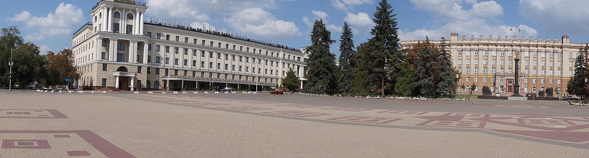
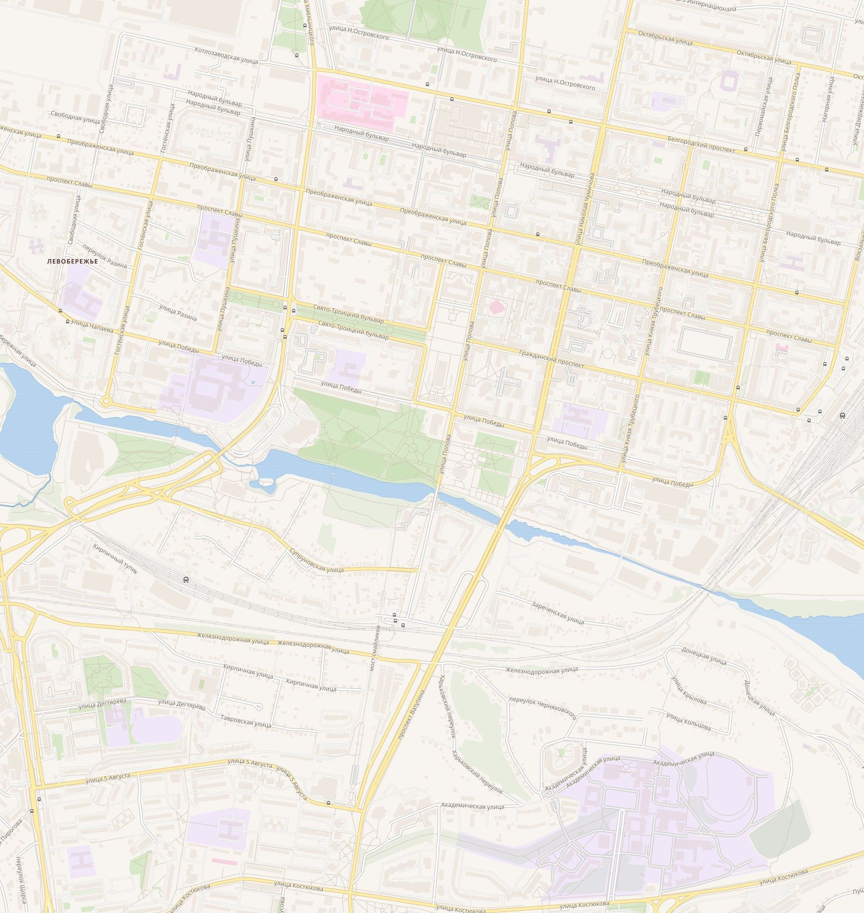

Пеший туристический маршрут по центру Белгорода
Выполнил: Уродовских Всеволод, группа БЭАД262, НИУ ВШЭ

Я вырос в Белгороде и долго не задумывался, почему в центре так мало старых домов. Оказалось, что после боёв 1943 года в городе не осталось ни одного целого здания. Город дважды переходил из рук в руки, а к моменту освобождения 5 августа 1943 года из 34 тысяч довоенных жителей в нём оставалось всего 150 человек.
Поэтому тема маршрута — как Белгород собирали заново. Маршрут начинается у памятника князю Владимиру на Харьковской горе, проходит через музеи о войне и послевоенный центр города и заканчивается у старых зданий, которые пережили войну и были восстановлены.
| Количество остановок | 11 |
|---|---|
| Длина маршрута | около 5 км |
| Время | 4–5 часов (вместе с музеем) |
| Как передвигаться | пешком |
| Самое старое здание на маршруте | Успенско-Николаевский собор (1692–1703) |
На карте отмечены все 11 точек. Пунктир соединяет их по прямой, настоящий путь идёт по улицам (его можно построить по ссылкам на Яндекс Карты у каждой остановки).

Карта: © участники OpenStreetMap
Если смотреть на центр Белгорода без истории, он кажется просто новым и аккуратным. Маршрут показывает, откуда эта новизна: почти всё, что видно с Соборной площади, построено после 1943 года на месте разрушенного. А у немногих старых зданий своя история выживания: храм, который был хлебозаводом, собор, где работал музей, собор, который пытались взорвать уже после войны.
Важно: Белгород находится в 35 км от границы. Перед поездкой нужно проверить официальные сообщения о безопасности и уточнить, работают ли музеи.